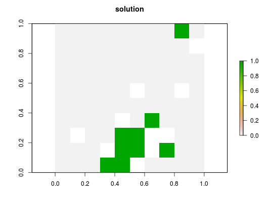

Set an objective to find the solution that fulfills all the targets and constraints for the smallest cost. This objective is similar to that used in Marxan and is detailed in Rodrigues et al. (2000).
add_min_set_objective(x)
| x |
|
|---|
A problem objective is used to specify the overall goal of the conservation planning problem. Please note that all conservation planning problems formulated in the prioritizr package require the addition of both objectives and targets. Failing to do so will return a default error message when solving.
In the context of systematic reserve design, the minimum set objective seeks to find the set of planning units that minimizes the overall cost of a reserve network, while meeting a set of representation targets for the conservation features. This objective is equivalent to a simplified Marxan reserve design problem with the Boundary Length Modifier (BLM) set to zero.
The minimum set objective for the reserve design problem can be expressed mathematically for a set of planning units (\(I\) indexed by \(i\)) and a set of features (\(J\) indexed by \(j\)) as: $$\mathit{Minimize} \space \sum_{i = 1}^{I} x_i c_i \\ \mathit{subject \space to} \\ \sum_{i = 1}^{I} x_i r_{ij} \geq T_j \space \forall \space j \in J$$
Here, \(x_i\) is the decisions variable (e.g. specifying
whether planning unit \(i\) has been selected (1) or not (0)),
\(c_i\) is the cost of planning unit \(i\), \(r_{ij}\) is
the amount of feature \(j\) in planning unit \(i\), and
\(T_j\) is the target for feature \(j\). The first term is the
objective function and the second is the set of constraints. In words this
says find the set of planning units that meets all the representation
targets while minimizing the overall cost.
Rodrigues AS, Cerdeira OJ, and Gaston KJ (2000) Flexibility, efficiency, and accountability: adapting reserve selection algorithms to more complex conservation problems. Ecography, 23: 565--574.
objectives, constraints,
problem, targets.
# load data data(sim_pu_raster, sim_features) # create problem p <- problem(sim_pu_raster, sim_features) %>% add_min_set_objective() %>% add_relative_targets(0.1) %>% add_binary_decisions() # solve problem s <- solve(p)#> Optimize a model with 5 rows, 90 columns and 450 nonzeros #> Variable types: 0 continuous, 90 integer (90 binary) #> Coefficient statistics: #> Matrix range [2e-01, 9e-01] #> Objective range [2e+02, 2e+02] #> Bounds range [1e+00, 1e+00] #> RHS range [3e+00, 7e+00] #> Found heuristic solution: objective 2145.2678910 #> Presolve time: 0.00s #> Presolved: 5 rows, 90 columns, 450 nonzeros #> Variable types: 0 continuous, 90 integer (90 binary) #> Presolved: 5 rows, 90 columns, 450 nonzeros #> #> #> Root relaxation: objective 1.726522e+03, 11 iterations, 0.00 seconds #> #> Nodes | Current Node | Objective Bounds | Work #> Expl Unexpl | Obj Depth IntInf | Incumbent BestBd Gap | It/Node Time #> #> 0 0 1726.52215 0 4 2145.26789 1726.52215 19.5% - 0s #> H 0 0 1792.7738341 1726.52215 3.70% - 0s #> #> Explored 1 nodes (11 simplex iterations) in 0.00 seconds #> Thread count was 1 (of 4 available processors) #> #> Solution count 2: 1792.77 2145.27 #> #> Optimal solution found (tolerance 1.00e-01) #> Best objective 1.792773834063e+03, best bound 1.726522151579e+03, gap 3.6955%# plot solution plot(s, main = "solution", axes = FALSE, box = FALSE)